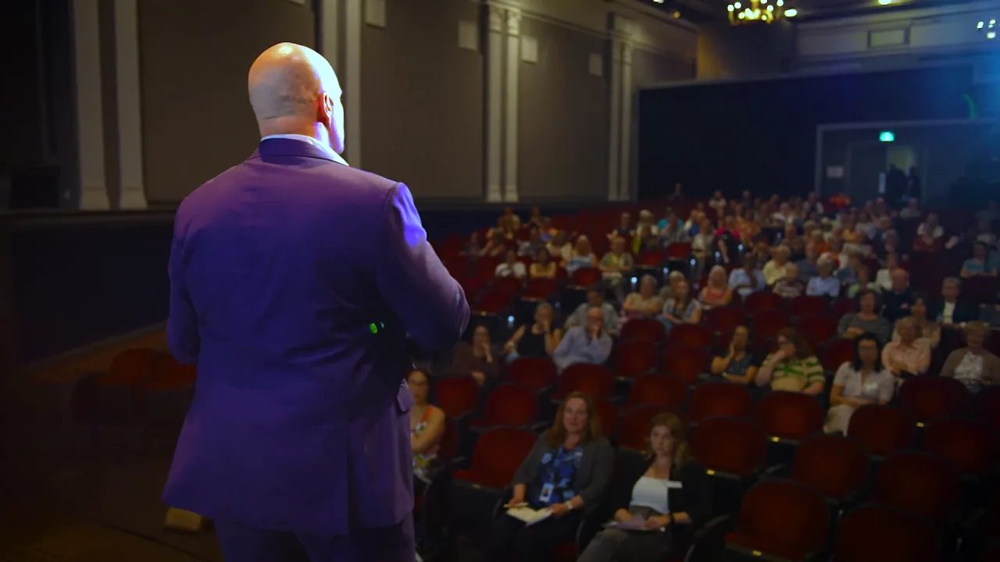
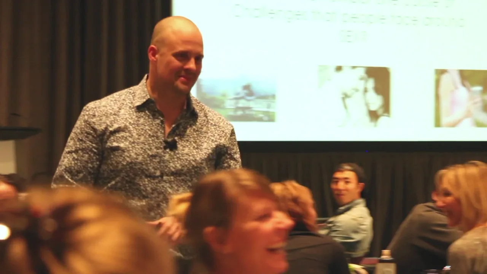
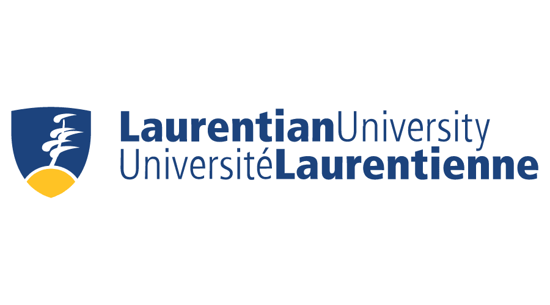
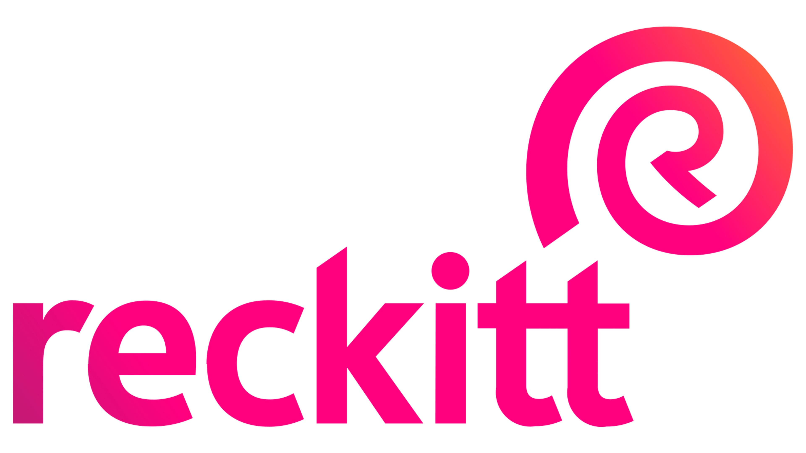
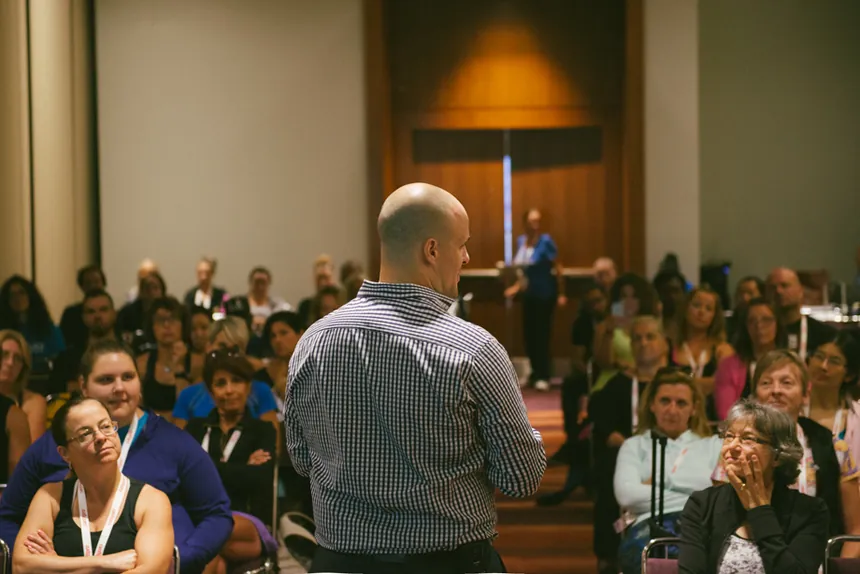

01
Human Connection
What every result in your organization actually runs on.
The through-line
01
What every result in your organization actually runs on.

02
Reading people well and responding well. It can be taught.
03
The signature keynote.

04
The thing that speeds everything else up.
05
Clear what quietly slows a team down.
The same patterns
show up .
One skill set. Every room.
One skill set. Every room.

Twenty years as a therapist, sexologist and researcher, in the rooms where people finally tell the truth.
0 leaders in the room. 0 keynotes delivered. 0 years learning how people actually connect.


Your organization could be next on this list.
Bring Stephen to your eventHow it works

For hospitals, long-term care, and the caregivers who hold emotionally demanding work together.
The room, mid-talk. Where the change starts, long before it reaches a report.
Before the keynote
Keynotes, workshops and half-day sessions for teams, conferences, associations and healthcare organizations.